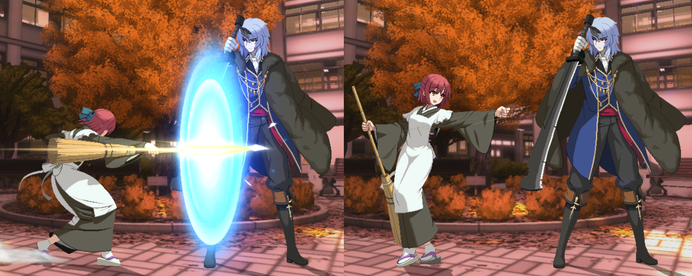

Guia de MBTL
feito por Tomoharu
Página Inicial
Primeiros Passos
Personagens
Básicos do jogo
Fundamentos Avançados
Sobre o Novo Patch
Básicos do Jogo

Esta página tem como objetivo apresentar de forma resumida todas as mecânicas únicas presentes em Melty Blood: Type Lumina.
Muito do básico de Lumina pode ser transferido para outros jogos de luta e vice-versa, fazendo com o conteúdo desta seção seja de utilidade também para o público geral de jogos de luta.
Vale a recomendação também da Oficina para Iniciantes de Lumina organizada pela Reverse Beat Brasil (RBBR) e feita por Jorge, um dos melhores jogadores da comunidade e também referência tanto para jogadores de todos os níveis.
No vídeo, foram cobertos tópicos como combos, mecãnicas de jogo, personagens, guias e referências, e mais.
Rapid Beat

O Rapid Beat é o nome dado ao autocombo dentro de Lumina, ou seja, apertando A, B ou C diversas versas consecutivas o seu personagem irá fazer um combo que irá lançar o oponente para o ar, e depois terminar com um air throw (agarrão aéreo).
Uma característica interessante do Rapid Beat é que ele ajuda na consistência de combos: em situações que um certo personagem só teria golpes que mandam o oponente muito longe, é o Rapid beat que vai manter ele dentro de seu combo sem que possa escapar dessa situação. Isso chega a ser usado até mesmo com jogadores profissionais do jogo, já que alguns personagens precisam desse regularidade na parte final de seus combos.
Além disso, todos os personagens tem um golpe exclusivo utilizado somente dentro do Rapid Beat. Portanto, a recomendação é que dentro dos controles do jogo o Rapid Beat sempre deve estar ligado.
Normals e Rebeat

Vamos começar a falar dos normals. Como o próprio nome já diz, normals são os golpes comuns, apertados pelos botões , ou e suas direções, que não são especiais ou combinação de botões. 2A é um normal, mas 22A não é, por exemplo, pois a direção para baixo é apertada mais de uma vez.
Cada personagem possui seu conjunto de normals diferentes de acordo com suas características, focados em serem golpes rápidos, para manter o oponente a curta ou longa distância, entre outros aspectos.
Tendo isso em mente, uma mecânica na qual Melty Blood se destaca é o Reverse Beat, geralmente abreviado como Rebeat. Geralmente, em vários jogos de luta, os personagens tem a possilidade de cancelar ataques fracos em ataques mais fortes. Por exemplo, a sequência de golpes com > > ou > seriam todas possíveis nesses tipos de jogos.
Entretanto, o Rebeat permite com que ataques mais fortes possam ser cancelados em ataques mais fracos. Isso faz com que uma sequência de golpes com > ou > sejam possíveis de serem feitas, por exemplo.
Isso por si só abre um leque gigante de oportunidades para se aplicar durante as partidas: combos são feitos usando rebeats, a ofensiva e a pressão mudam totalmente quando incrementado aos rebeats, entre outros aspectos.
É uma mecânica crucial de se aprender e dominar conforme for jogando Lumina.
Magic Circuit

De forma resumida, é a barra de especiais utilizadas durante o jogo.
Pode ser utilizada com EX Specials e Heats, além de poder ser carregada utilizando a sequência de botões:
↓ A + B (2A + B) .
Você sempre irá começar com 3 barras de Magic Circuit em uma partida, e ganhar mais uma barra assim que perder um round, ficando assim com 4 barras. Ao usar um Last Arc, porém, você perderá uma barra e voltará a ficar com 3 barras novamente.
O gerenciamento dessa barra e seus recursos em partidas é essencial para que o máximo potencial de jogo seja extraído.
Os usos de Magic Circuit e seus gastos de barra são:
- EX Specials: Os "supers" de Lumina, que gastam 1 barra de Magic Circuit.
- Arc Drive e Last Arc: Specials ainda mais fortes que os EX Specials, que gastam 3 barras de Magic Circuit;
- Last Arc: Os specials mais fortes do jogo, que gastam 4 barras de Magic Circuit. Ao utilizá-los, uma barra de Magic Circuit é perdida.
- Heat: a forma de carregar vida do jogo. Pode ser usado a partir de uma barra, e assim que esgotado irá zerar seu Magic Circuit. Quanto mais barras tiver na hora em que usar o Heat, mais vida poderá carregar.
Specials e EX Specials

Como o próprio nome já diz, são os especiais do jogo. A versão EX desses golpes é mais poderosa que as tradicionais porém gasta 1 barra de magic circuit.
Possuem usos variados de acordo com personagens, mas de modo geral são usados em combos para aumentar seu dano em combos ou conseguirem um knockdown (colocar um oponente no chão).
Os specials possuem inputs fixos dentro do jogo, sendo os principais funcionando pela seguinte sequência de botões:
- ↓ ↓ A/B/C (22A/B/C) ,
- ↓ ↘ → A/B/C (236A/B/C) e
- ↓ ↙ ← A/B/C (214A/B/C) , sendo as variações de A, B e C definindo a força do special que está sendo usado.
Há alguns specials, os quais chamamos de DPs (Dragon Punch), que possuem invencibilidade durante o começo do golpe, e portanto também podem ser utilizados como opção defensiva em certas ocasiões. Esses golpes, porém, também são conhecidos por te deixarem bastante vulneráveis caso o oponente não seja atingido por eles.
Não são todos os personagens que possuem DPs, e geralmente esses golpes são executados utilizando a sequência de botões:
- → ↓ → A/B/C (626A/B/C) , e em alguns casos
- ↓ ↓ A/B/C (22A/B/C) .
Heat e Blood Heat

---------------- TRECHO AINDA EM CONSTRUÇÃO ----------------
Arc Drive e Last Arc

---------------- TRECHO AINDA EM CONSTRUÇÃO ----------------
Moon Skill

---------------- TRECHO AINDA EM CONSTRUÇÃO ----------------
Moon Drive

---------------- TRECHO AINDA EM CONSTRUÇÃO ----------------
Shield e Shield Counters

---------------- TRECHO AINDA EM CONSTRUÇÃO ----------------
Tabela de Conteúdos
Primeiros Passos
Onde devo comprar e jogar? • Notação de Numpad • Por onde começar?
Personagens
Resumo e Arquétipos • Personagens para Iniciantes • Forças e Tier Lists
Básicos
Neutro • Normals • Moon Gauge • Shield • Rebeat • Combos
Avançado
Option Selects • Pensando como um top player